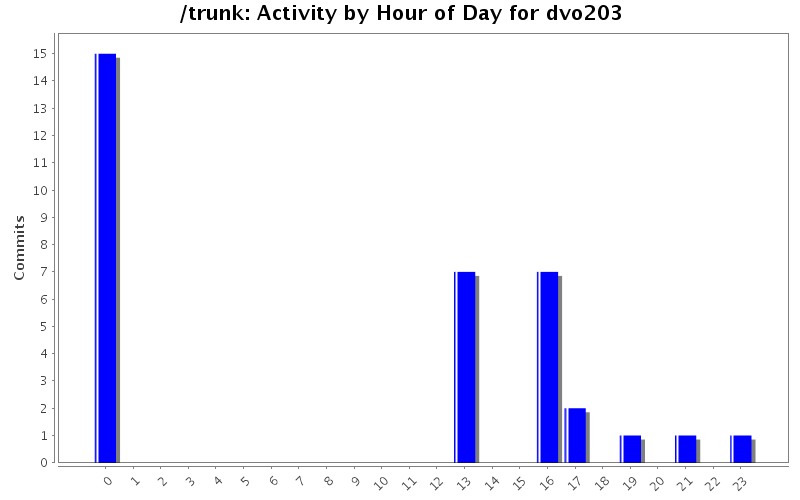
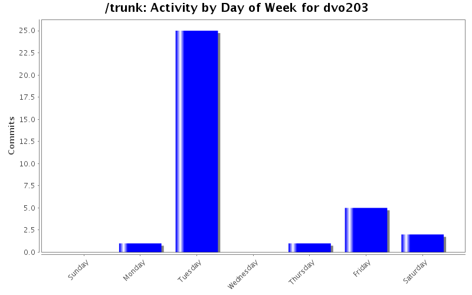
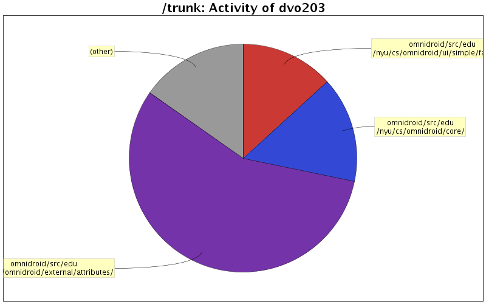

| Directory | Changes | Lines of Code | Lines per Change |
|---|---|---|---|
| Totals | 34 (100.0%) | 1025 (100.0%) | 30.1 |
| omnidroid/src/edu/nyu/cs/omnidroid/external/attributes/ | 14 (41.2%) | 579 (56.5%) | 41.3 |
| omnidroid/src/edu/nyu/cs/omnidroid/core/ | 4 (11.8%) | 154 (15.0%) | 38.5 |
| omnidroid/src/edu/nyu/cs/omnidroid/ui/simple/factoryui/ | 1 (2.9%) | 136 (13.3%) | 136.0 |
| omnidroid/src/edu/nyu/cs/omnidroid/external/actions/ | 1 (2.9%) | 41 (4.0%) | 41.0 |
| omnidroid/src/edu/nyu/cs/omnidroid/ui/simple/ | 3 (8.8%) | 38 (3.7%) | 12.6 |
| omnidroid/src/edu/nyu/cs/omnidroid/model/ | 1 (2.9%) | 20 (2.0%) | 20.0 |
| omnidroid/src/edu/nyu/cs/omnidroid/core/datatypes/ | 3 (8.8%) | 20 (2.0%) | 6.6 |
| omnidroid/ | 3 (8.8%) | 20 (2.0%) | 6.6 |
| omnidroid-test/src/edu/nyu/cs/omnidroid/core/datatypes/ | 2 (5.9%) | 10 (1.0%) | 5.0 |
| omnidroid-test/ | 1 (2.9%) | 4 (0.4%) | 4.0 |
| omnidroid/src/edu/nyu/cs/omnidroid/bkgservice/ | 1 (2.9%) | 3 (0.3%) | 3.0 |

Issue 104050: Bug fix for OmniArea Filter.
1 lines of code changed in 1 file:
Issue 99057: Made getOmniArea test to only run when EXECUTING_ON_EMULATOR flag is false.
9 lines of code changed in 1 file:
Issue 100044: Created EXECUTING_ON_EMULATOR flag. Then set to true, the PhoneIsFalling will not initialize.
17 lines of code changed in 2 files:
108 lines of code changed in 7 files:
Added support for Location Services intent and Phone Call intent.
726 lines of code changed in 15 files:
Added reference tag validation to OmniPhoneNumber.
19 lines of code changed in 1 file:
Added support location action parameters.
136 lines of code changed in 1 file:
Created location based filtering support. Issue 98053.
8 lines of code changed in 4 files:
Added new permission in order to access GPS LocationProvider.
1 lines of code changed in 1 file:
Created a new class FactoryDataType that will be used to create Omnidroid datatypes dynamically.
0 lines of code changed in 1 file: